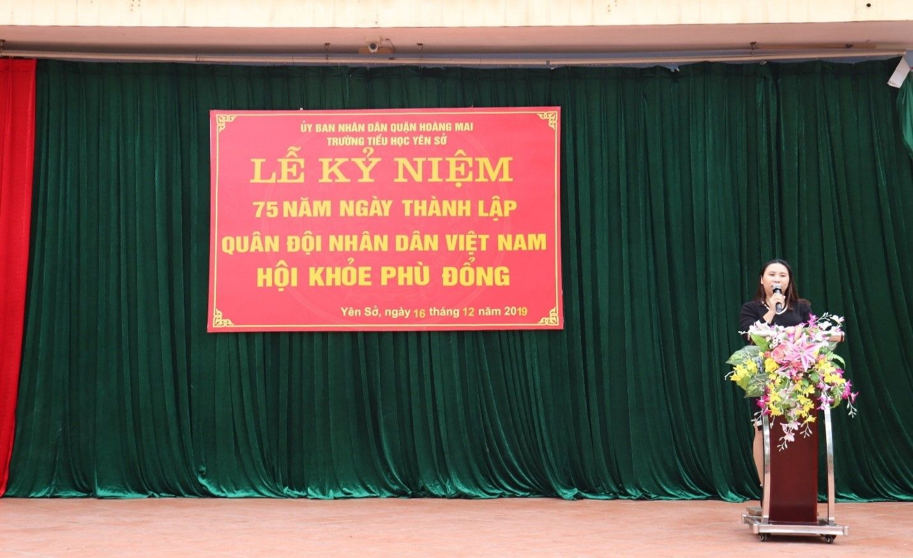
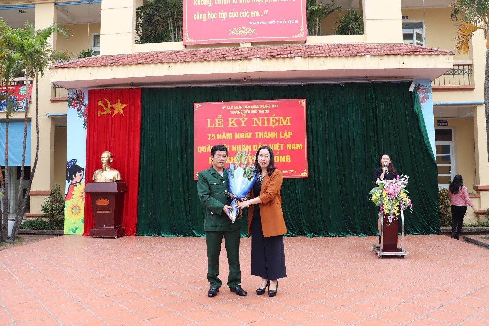
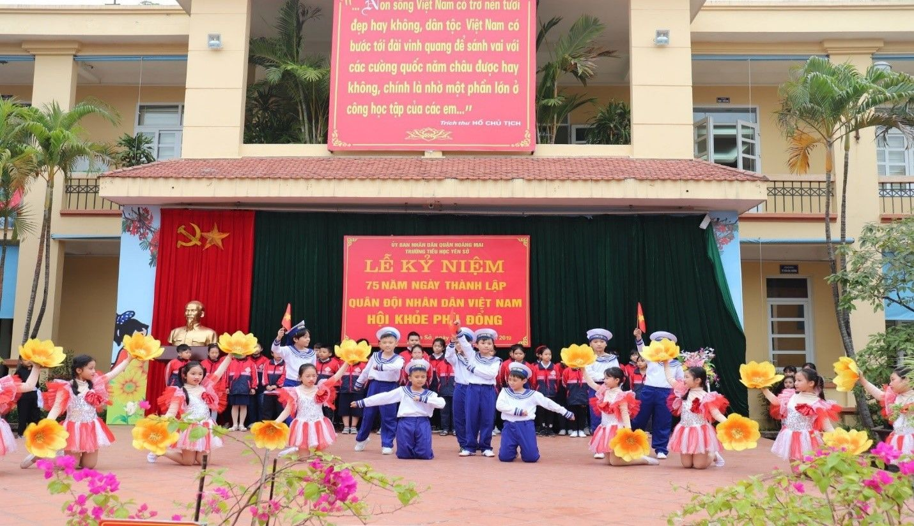
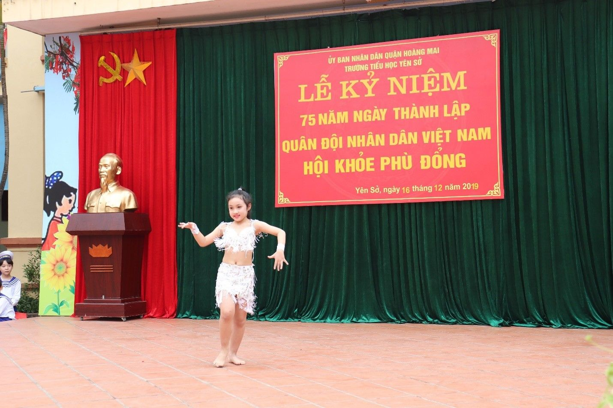
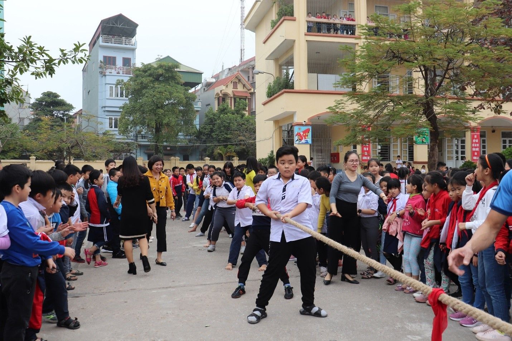

TRƯỜNG TIỂU HỌC YÊN SỞ LONG TRỌNG TỔ CHỨC KỈ NIỆM 75 NĂM NGÀY THÀNH LẬP QUÂN ĐỘI NHÂN DÂN VIỆT NAM VÀ HỘI KHỎE PHÙ ĐỔNG
Dân tộc Việt Nam đã trải qua hàng nghìn năm dựng nước và giữ nước. Nhân dân ta đã trải qua các cuộc chiến thắng thần thánh của dân tộc. Đó là chiến thắng thực dân Pháp và đế quốc Mỹ xâm lược giành độc lập tự do cho dân tộc và tiến lên xây dựng Tổ quốc Việt Nam XHCN. Một trong những bước ngoặt quan trọng để làm nên những chiến thắng đó là ngày 22/12/1944, ngày thành lập Quân đội nhân dân Việt Nam mà tiền thân là đội Việt Nam tuyên truyền giải phóng quân ra đời. Quân đội ta từ nhân dân mà ra, được Đảng Cộng sản Việt Nam và Chủ tịch Hồ Chí Minh tổ chức xây dựng, giáo dục, rèn luyện. Chặng đường 75 năm xây dựng, chiến đấu và trưởng thành của Quân đội nhân dân Việt Nam đã tô thắm lịch sử dựng nước và giữ nước vẻ vang của dân tộc, làm rạng ngời thời đại Hồ Chí Minh.
Hôm nay, trong không khí vui mừng và phấn khởi của toàn Đảng, toàn dân chào mừng 75 năm ngày thành lập Quân đội nhân dân Việt Nam, Trường Tiểu học Yên Sở long trọng tổ chức lễ kỉ niệm 75 năm ngày thành lập Quân đội nhân dân Việt Nam (22/12/1944 - 22/12/2019) và Hội khỏe Phù Đổng để động viên tinh thần cho những chiến sĩ nhỏ tương lai, tiếp bước cha anh, giữ vững và phát huy truyền thống anh hùng của Quân đội nhân dân Việt Nam xây dựng và bảo vệ Tổ Quốc Việt Nam Xã hội chủ nghĩa.
Mở đầu chương trình là phần tuyên truyền kỉ niệm về ngày thành lập Quân đội nhân dân Việt Nam 22/12 của cô Phạm Thị Thanh Huyền – Tổng phụ trách nhà trường.

Cô Phạm Thanh Huyền – TPT đang tuyên truyền về ngày kỉ niệm
Tiếp theo chương trình là phần tặng hoa các bác nhân viên nhà trường đã từng tham gia quân ngũ, nhằm tri ân đến các bác nhân ngày Quân đội nhân dân Việt Nam.

Cô Nguyễn Thị Hồng – Hiệu trưởng nhà trường tặng hoa cho bác Nguyễn Văn Dần
Để chào mừng ngày lễ quan trọng và ý nghĩa này, Chi đội 4A6 đã gửi tới các thầy cô giáo, các bác nhân viên và các bạn học sinh những tiết mục văn nghệ đặc sắc mang đậm những giá trị, phẩm chất cao đẹp của anh chiến sĩ bộ đội cụ Hồ.

Bài hát múa “Cháu hát về đảo xa”
.jpg) Tiết mục võ thuật Nam Hồng Sơn
Tiết mục võ thuật Nam Hồng Sơn

Tiết mục múa của bạn Thùy Dương
Phần thú vị và được các em học sinh mong chờ nhất trong buổi lễ ngày hôm nay đó chính là phần Hội khỏe Phù Đổng nhằm rèn luyện sức khỏe để học tập thật tốt. Trong Hội khỏe Phù Đổng, các em học sinh được tham gia rất nhiều phần thi bổ ích và lý thú. Các em học sinh khối 1 tham gia thi lăn bóng, khối 2 và 3 thi chạy tiếp sức và khối 4, 5 thi kéo co. Các đội thi vô cùng nhiệt tình và hào hứng, đội nào cũng mong muốn mang chiến thắng về cho lớp của mình. Các bạn học sinh đứng hai bên reo hò, cổ vũ, tạo nên một không khí rất sôi động, náo nhiệt.
Dưới đây là một số hình ảnh về Hội thi:
Các em học sinh khối 4 và 5 thi kéo co trong sự cổ vũ nhiệt tình của các bạn.
Kết thúc Hội thi, lớp 1A5 vô địch khối 1 trong phần thi lăn bóng. Vô địch chạy tiếp sức thuộc về lớp 3A1. Môn kéo co đã tìm được 2 đội thắng cuộc đó là chi đội 4A2 và 5A5. Hội thi kết thúc trong sự tiếc nuối của các em học sinh và dư âm của các nội dung biểu diễn vẫn còn đó làm cho tâm trạng của cô và trò xao xuyến suốt buổi học.
Lễ kỉ niệm ngày thành lập Quân đội nhân dân Việt Nam và Hội khoẻ Phù Đổng của trường Tiểu học Yên sở đã thành công tốt đẹp. Hội khỏe thật sự là dịp để học sinh trong nhà trường giao lưu, học hỏi, tăng cường hiểu biết, thắt chặt tình đoàn kết gắn bó, yêu thương giúp đỡ lẫn nhau. Đồng thời tạo nên không khí thi đua sôi nổi của các thầy cô giáo và các em học sinh trong toàn trường, khơi dậy phong trào rèn luyện thân thể học sinh, từ đó đẩy mạnh phong trào dạy tốt, học tốt nhằm hoàn thành nhiệm vụ năm học.